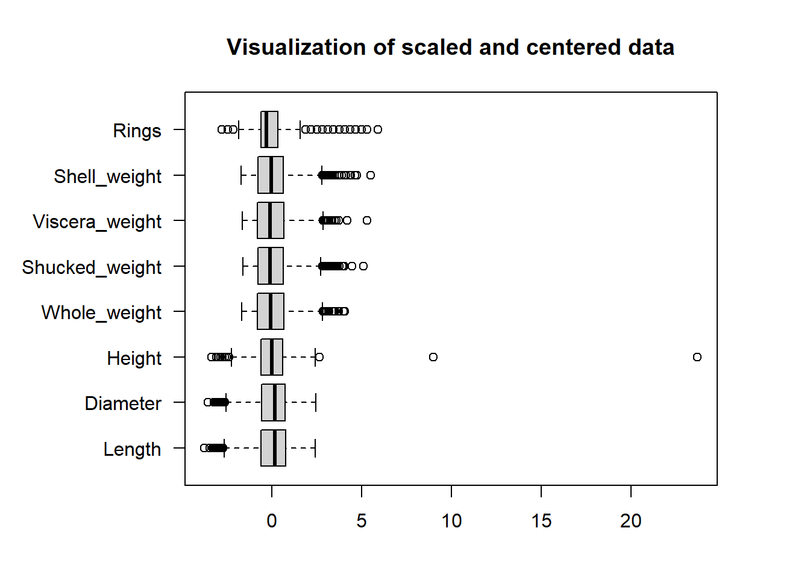
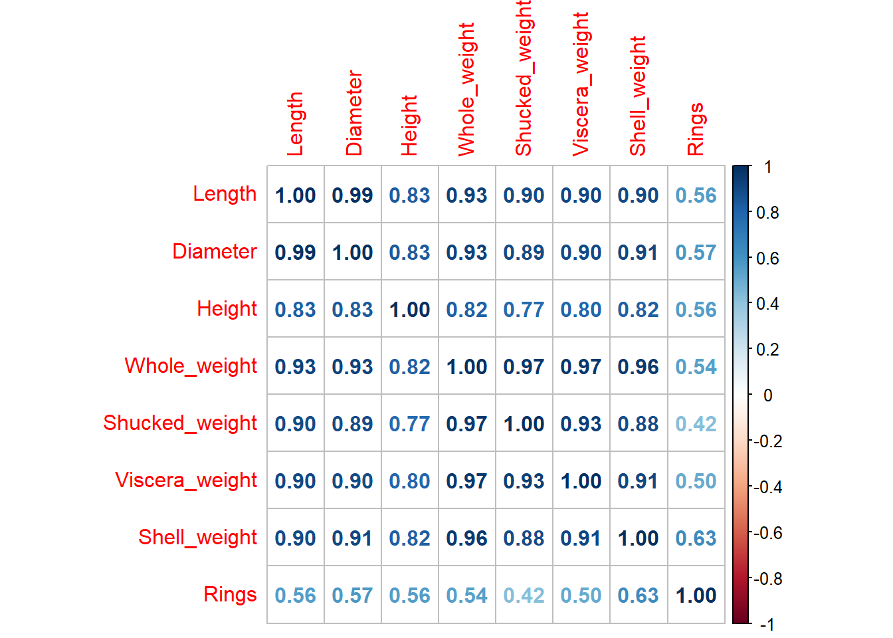
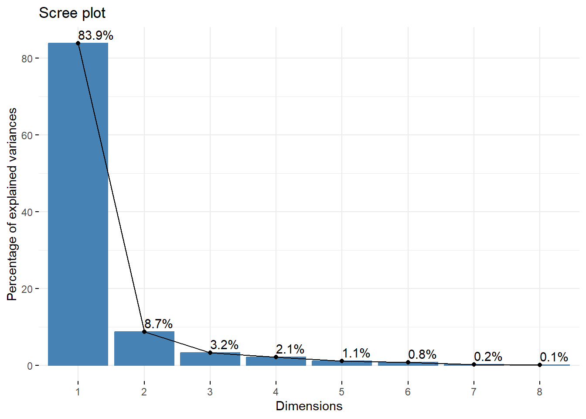

The dataset contains 9 variables with 1 categorical variable and 8 numeric variables. The dataset contains no missing values. For this example in applying principal component analysis, we exclude the categorical variable ‘Sex’ and focus the PCA on the numerical dimensions of the Abalone. For analyses involving a mix of numeric and non-numeric variables other factor analysis techniques can be used, such as factor analysis of mixed data. [1]
Code
# Select only the numeric variables abalone <- abalone %>%select(where(is.numeric))summary(abalone)
Length Diameter Height Whole_weight
Min. :0.075 Min. :0.0550 Min. :0.0000 Min. :0.0020
1st Qu.:0.450 1st Qu.:0.3500 1st Qu.:0.1150 1st Qu.:0.4415
Median :0.545 Median :0.4250 Median :0.1400 Median :0.7995
Mean :0.524 Mean :0.4079 Mean :0.1395 Mean :0.8287
3rd Qu.:0.615 3rd Qu.:0.4800 3rd Qu.:0.1650 3rd Qu.:1.1530
Max. :0.815 Max. :0.6500 Max. :1.1300 Max. :2.8255
Shucked_weight Viscera_weight Shell_weight Rings
Min. :0.0010 Min. :0.0005 Min. :0.0015 Min. : 1.000
1st Qu.:0.1860 1st Qu.:0.0935 1st Qu.:0.1300 1st Qu.: 8.000
Median :0.3360 Median :0.1710 Median :0.2340 Median : 9.000
Mean :0.3594 Mean :0.1806 Mean :0.2388 Mean : 9.934
3rd Qu.:0.5020 3rd Qu.:0.2530 3rd Qu.:0.3290 3rd Qu.:11.000
Max. :1.4880 Max. :0.7600 Max. :1.0050 Max. :29.000
The summary statistics show the differences in measurement between variables, with some variables such as diameter and viscera weight having small ranges and others, namely rings, having relatively large ranges. For this reason, scaling of the variables is a crucial step in PCA to ensure results accurately capture the variance in the data.
6.3 Feature Scaling
Standardization ensures all variables, also called features, are on the same scale, and the scale function allows us to center the data to a mean of 0 and variance of 1. This ensures no single feature has an outsized effect during the principal component analysis.
Code
# Standardization of numerical featuresabalone_sc <-scale(abalone, center =TRUE, scale =TRUE)summary(abalone_sc)
Length Diameter Height Whole_weight
Min. :-3.7387 Min. :-3.5558 Min. :-3.33555 Min. :-1.68589
1st Qu.:-0.6161 1st Qu.:-0.5832 1st Qu.:-0.58614 1st Qu.:-0.78966
Median : 0.1749 Median : 0.1725 Median : 0.01156 Median :-0.05963
Mean : 0.0000 Mean : 0.0000 Mean : 0.00000 Mean : 0.00000
3rd Qu.: 0.7578 3rd Qu.: 0.7267 3rd Qu.: 0.60926 3rd Qu.: 0.66123
Max. : 2.4232 Max. : 2.4397 Max. :23.68045 Max. : 4.07178
Shucked_weight Viscera_weight Shell_weight Rings
Min. :-1.6145 Min. :-1.64298 Min. :-1.7049 Min. :-2.7708
1st Qu.:-0.7811 1st Qu.:-0.79455 1st Qu.:-0.7818 1st Qu.:-0.5997
Median :-0.1053 Median :-0.08752 Median :-0.0347 Median :-0.2896
Mean : 0.0000 Mean : 0.00000 Mean : 0.0000 Mean : 0.0000
3rd Qu.: 0.6426 3rd Qu.: 0.66056 3rd Qu.: 0.6478 3rd Qu.: 0.3307
Max. : 5.0848 Max. : 5.28587 Max. : 5.5040 Max. : 5.9136
Viewing the data after scaling and centering, values greater than 3 or less than -3 represent outliers more than 3 standard deviations from the mean. Based on the ranges of the variables, we should view a boxplot of the data to further investigate.
Code
# Plot a boxplot to visualize potential outlierspar(mar=c(4, 8, 4, 4))boxplot(abalone_sc, main ="Visualization of scaled and centered data", horizontal =TRUE, las =1)

Are there enough outliers to be a cause for concern? We can see how many lie outside of the third standard deviation of the data for each variable.
Of the 4177 observations, at most 62 in a single variable (rings) are outliers. The tolerance for outliers will differ depending on the investigation, but for our purposes this number is well within tolerance for principal component analysis.
Lastly, we can investigate the correlation among the variables. PCA is best used with linearly correlated data. If the data is not correlated, the results of PCA will be less meaningful.
Code
# Calculate correlations and round to 2 digitsabalone_corr <-cor(abalone_sc)corrplot(abalone_corr, method="number")

Our scaled and centered data has strong linear correlations and contains a relatively small number of outliers. We can now calculate the principal components of the dataset.
6.4 PCA via Singular Value Decomposition
The prcomp() function in R performs principal component analysis on a dataset using the singular value decomposition method which utilizes the covariance matrix of the data. [2]
Code
# Apply PCA using prcomp()abalone_pca <-prcomp(abalone_sc)summary(abalone_pca)
Importance of components:
PC1 PC2 PC3 PC4 PC5 PC6 PC7
Standard deviation 2.591 0.83403 0.50837 0.40742 0.29146 0.25194 0.11267
Proportion of Variance 0.839 0.08695 0.03231 0.02075 0.01062 0.00793 0.00159
Cumulative Proportion 0.839 0.92601 0.95831 0.97906 0.98968 0.99761 0.99920
PC8
Standard deviation 0.07999
Proportion of Variance 0.00080
Cumulative Proportion 1.00000
6.4.1 PCA - Cumulative Variance and Number of Principal Components
Code
# Principal Component scores vectorpc_scores <- abalone_pca$x# Std Deviation of Componentscomponent_sdev <- abalone_pca$sdev# Eigenvector or Loadingseigenvector <- abalone_pca$rotation# Mean of variablescomponent_mean <- abalone_pca$center # Scaling factor of Variablescomponent_scale <- abalone_pca$scale# Proportion of variance explained by each PCvariance_explained <- component_sdev^2/sum(component_sdev^2)# Cumulative proportion of variance explainedcumulative_variance_explained <-cumsum(variance_explained)# Retain components that explain a percentage of the variancenum_components <-which(cumulative_variance_explained >=0.92)[1]# Select the desired number of principal componentsselected_pcs <- pc_scores[, 1:num_components]# Display cumulative variancecumulative_variance_explained
The first 2 principal components alone explain 92% of the variance in the data.
6.4.2 Loading of First Two Components
The loading are the weights assigned to each variable for that particular principal component.
Code
# Access the loadings for the first two principal componentsloadings_first_two_components <- eigenvector[, 1:2]# Print the loadings for the first two principal componentsprint("Loadings for the first two principal components:")
[1] "Loadings for the first two principal components:"
The values in abalone_pca$x are the coordinates of each observation in the new principal component space. These coordinates are the scores for each observation along each principal component. The eigenvectors of the covariance or correlation matrix of the data represent the directions of maximum variance in the dataset.
6.5 Visualization
6.5.1 Scree Plot - Cumulative Variance Explained
Code
fviz_eig(abalone_pca, addlabels =TRUE)

The scree plot visualizes the variance captured by each PC. PC1 explains 83.9% of the variance, and PC2 explains 8.7% variance.
6.5.2 Biplot
The correlation between a variable and a principal component is used as the coordinates of the variable on the PC, shown as dimensions on the biplot. Dim1 corresponds to PC1, and Dim2 to PC2. The representation of variables differs from the plot of the observations: The observations are represented by their projections, but the variables are represented by their correlations. (Abdi and Williams 2010) [ref]